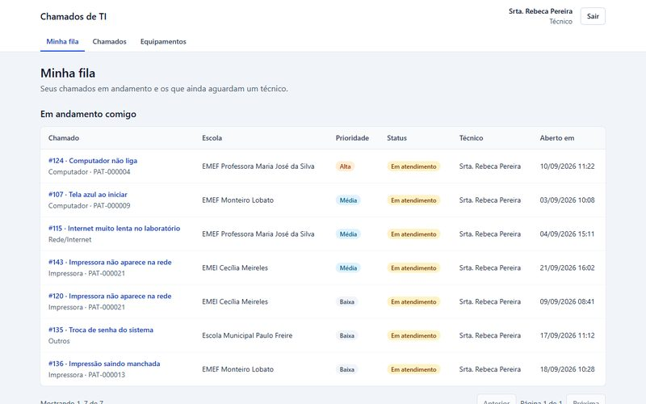
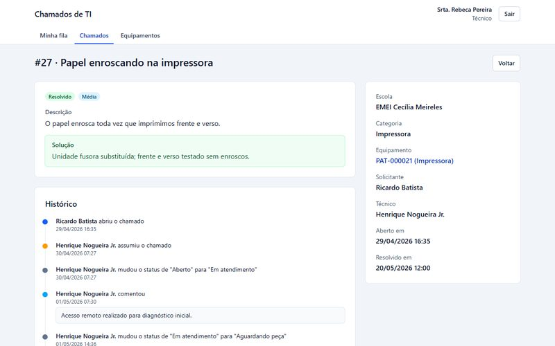
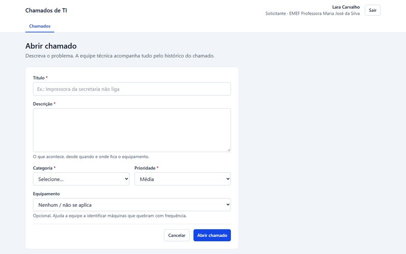
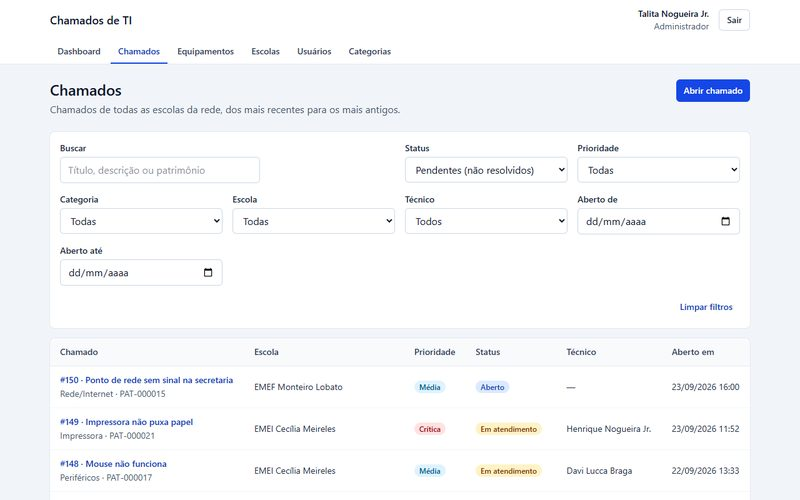
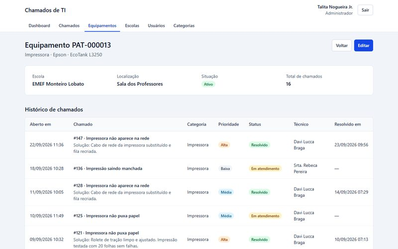

Case de projeto · Full Stack
Chamados de TI.
Sistema web para as escolas de uma rede de ensino abrirem chamados de TI, a equipe técnica atender com histórico completo e a gestão acompanhar tudo num dashboard. Feito de ponta a ponta em TypeScript: React no front, Node.js/Express na API e PostgreSQL no banco.
01 · Contexto
De onde veio a ideia
Trabalhei 1 ano e 5 meses no suporte de TI da Secretaria de Educação de Padre Bernardo (GO), atendendo a Secretaria e as escolas da rede. O projeto é o sistema que organiza esse tipo de rotina: impressora parada, computador sem internet, projetor com defeito.
O problema
Quando o pedido chega por telefone, WhatsApp ou recado no corredor, não fica registrado. Ninguém sabe o que está pendente, quem está cuidando de quê, nem quais máquinas quebram toda semana.
A solução
A escola abre o chamado, o técnico assume e registra a solução, e a gestão acompanha indicadores. Cada passo fica no histórico do chamado e do equipamento.
02 · Funcionalidades
Um sistema, três perfis
Cada perfil vê um menu próprio e só acessa o que lhe cabe. A regra é garantida pela API, não apenas escondida na tela.
Escola
Diretor ou secretaria abre chamados com categoria, prioridade e o equipamento com defeito, acompanha a linha do tempo e comenta. Nunca enxerga chamados de outras escolas.
Técnico
A tela Minha fila mostra os chamados com ele e os que aguardam um técnico, por urgência. Assume, muda o status, registra a solução e consulta o histórico de cada máquina.
Gestão
Cadastra escolas, usuários, categorias e equipamentos (desativar não apaga histórico) e acompanha o dashboard, filtrável por período e escola.
A escola registra o problema.
Só um técnico consegue assumir.
Exige a solução descrita, que fica no histórico.
Volta ao atendimento quando a peça chega.
03 · Telas
O sistema em uso
Capturas da versão publicada, com os dados de demonstração. Clique para ver a tela inteira.
 Dashboard da gestãoStatus, escolas, categorias, tempo médio e equipamentos que mais quebram.
Dashboard da gestãoStatus, escolas, categorias, tempo médio e equipamentos que mais quebram.

Minha filaO que está com o técnico e o que aguarda atendimento.
Detalhe do chamadoLinha do tempo imutável, comentários e ações por status.
Abrir chamadoFormulário da escola, com erros exibidos no campo certo.
Lista com filtrosFiltros combináveis que ficam salvos no link da página.
EquipamentoPatrimônio da escola e o histórico de defeitos da máquina.04 · Engenharia
Como a aplicação funciona
Monorepo em TypeScript strict, sem any. A API é organizada em camadas (rotas, controllers, services e Prisma), e toda regra de negócio vive nos services, que é o que os testes exercitam.
Tailwind, TanStack Query e React Hook Form. Publicado na Vercel, na mesma origem da API.
Validação com Zod, JWT em cookie httpOnly, máquina de estados e erros por campo.
Transações, migrações versionadas e soft delete. API e banco no Render, descritos como código.
Stack
Qualidade
117 testes de integração contra PostgreSQL real, cobrindo permissões, fluxo de status, transações, concorrência, filtros e dashboard. O CI roda formatação, lint, typecheck, build e testes a cada push.
05 · Decisões técnicas
O que este projeto demonstra
Isolamento por escola
O filtro da escola entra na própria consulta ao banco. Um chamado de outra escola responde 404 e nem revela que existe, o que previne IDOR.
Assumir sem conflito
A atualização só acontece se o chamado ainda estiver aberto e sem técnico. Se dois técnicos clicam juntos, um consegue e o outro recebe um aviso (HTTP 409).
Histórico que não fica pela metade
Toda alteração grava o histórico na mesma transação. Um teste força uma falha no banco e prova que a mudança de status é desfeita junto.
Sessão segura
JWT em cookie httpOnly, Secure e SameSite, que o JavaScript da página não consegue ler. Senhas com bcrypt, e desativar um usuário corta o acesso na hora.
Indicadores confiáveis
Tempo médio de resolução em SQL parametrizado e períodos no fuso de Brasília: um chamado aberto às 23h30 do dia 30 entra no dia 30, com teste para isso.
Pensado para quem usa
Filtros guardados na URL sobrevivem ao F5 e podem ser compartilhados. O dashboard é carregado sob demanda, então só a gestão baixa a biblioteca de gráficos.
06 · Próximos passos
Escolhas conscientes
Trade-offs assumidos
Paginação por offset e busca com ILIKE atendem bem o volume de uma rede de escolas. Cursor e busca full-text ficam para quando o volume pedir.
Fora do MVP, de propósito
Notificação por e-mail, foto do defeito, reabertura de chamado resolvido, SLA por prioridade com alertas e app mobile.
07 · Teste você mesmo
Roteiro de 3 minutos
Abra um chamado como escola, assuma e resolva como técnico e veja o resultado no dashboard como gestão. Todos os usuários usam a senha Senha@123.
direcao.mariajose@chamados.devAbrir um chamado e acompanhar a linha do tempotecnico1@chamados.devMinha fila, assumir e resolveradmin@chamados.devDashboard, cadastros e ranking de equipamentosA API roda num plano gratuito que desliga após 15 minutos sem uso, então o primeiro acesso pode levar até 1 minuto.
Projeto publicado
Quer ver o Chamados de TI funcionando?
A aplicação está online, e o código, com a documentação das decisões técnicas e os testes, está aberto no GitHub.